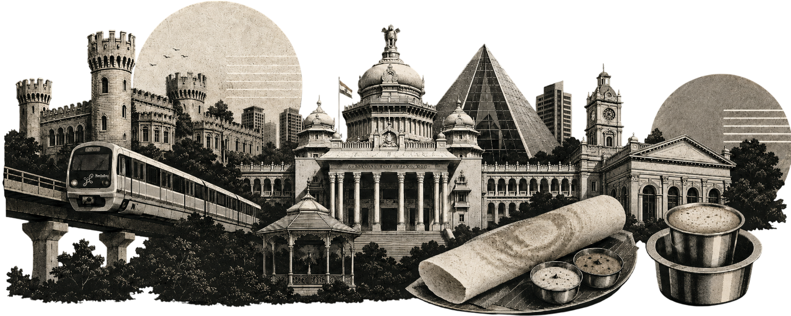

// early_bird
Tickets are
live.
AttendeeAdmit one
Your name goes here. That is what buying one gets you.
₹600
Early Bird, until 17 Sep
₹800 after that. Both cover the full weekend.
Priced low on purpose, because this is a community event and not a conference business.
Sat 21
Contributor Day, venue soon
Sun 22
Main event, SJBHS Museum Road